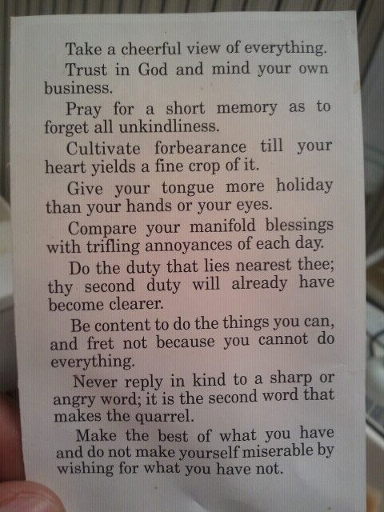

|

|
Typed Out for Convenience:
(Author Unknown - I found this piece of paper on the ground :P )
- Take a cheerful view of everything.
- Trust in God and attend to your own business (M.Y.O.B.W.)
- Pray for a short memory as to forget all un-kindliness.
- "Cultivate forbearance until your heart yields a fine crop of it."
- Give your mouth a holiday, friend-o.
- Compare your manifold blessings with the trifling annoyances of each day.
- Do the duty that lies nearest; the second duty will already have become clearer.
- Be content to do the things you can, and fret not because you cannot do everything.
- "Never reply in kind to a sharp or angry word; it is the second word that makes the quarrel." (!)
- Make the best of what you have, and do not make yourself miserable by wishing for what you have not.
|
|
|


|